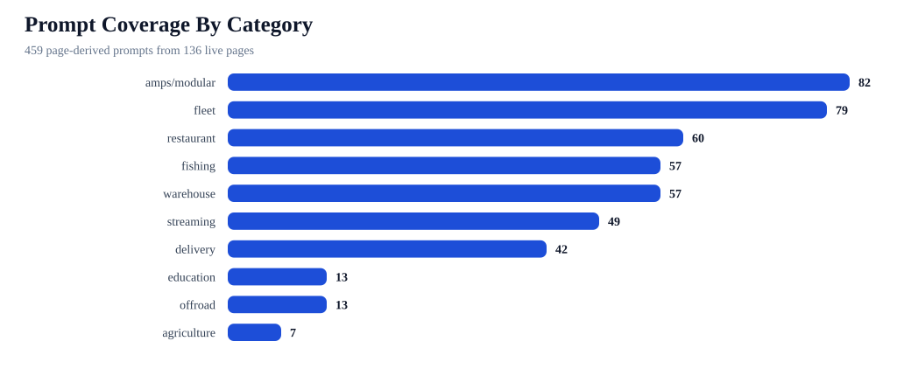
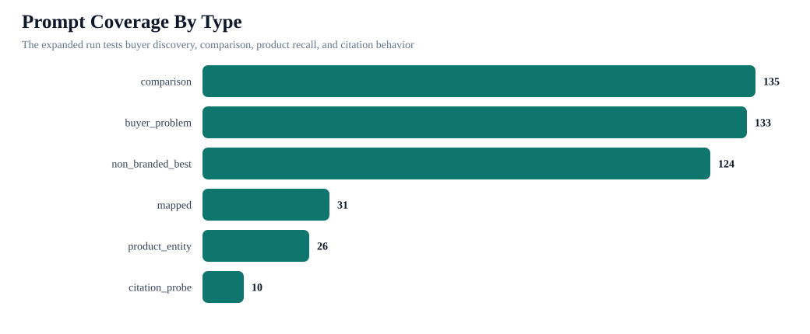

iBOLT Page-Derived Expanded Benchmark Pack
This dry-run pack expands benchmark coverage from the live blog inventory. It creates one-at-a-time prompts for non-branded buyer discovery, competitor comparisons, product entity recall, voice-assistant style questions, and citation probes.
459Prompt rows
1377Provider requests
136Pages covered
10Categories
135Comparison prompts
26Product prompts
Coverage


Top Prompts To Run
| # | Prompt | Category | Type | Priority | Closest page | Metric |
|---|---|---|---|---|---|---|
| 1 | best multi tablet mount | restaurant | mapped | 100 | Best Restaurant Tablet Mount in 2026: POS Stands, Delivery App Stations, and Multi-Tablet Solutions Compared | mapped-query mention and top-three recovery |
| 2 | best restaurant tablet mount | restaurant | mapped | 100 | Best Restaurant Tablet Mount in 2026: POS Stands, Delivery App Stations, and Multi-Tablet Solutions Compared | mapped-query mention and top-three recovery |
| 3 | best tablet mount | restaurant | mapped | 100 | Best Restaurant Tablet Mount in 2026: POS Stands, Delivery App Stations, and Multi-Tablet Solutions Compared | mapped-query mention and top-three recovery |
| 4 | is iBOLT™ 20mm Metal Ball Suction Cup Base good for restaurant tablet mount in pos stands delivery app stations and multi-tablet solutions | restaurant | product_entity | 100 | Best Restaurant Tablet Mount in 2026: POS Stands, Delivery App Stations, and Multi-Tablet Solutions Compared | catalog product recall |
| 5 | RAM Mounts vs iBOLT for restaurant tablet mount in pos stands delivery app stations and multi-tablet solutions | restaurant | comparison | 100 | Best Restaurant Tablet Mount in 2026: POS Stands, Delivery App Stations, and Multi-Tablet Solutions Compared | co-mention to top-three movement |
| 6 | best fish finder | fishing | mapped | 98 | Best Garmin Fish Finder Mount: How to Choose the Right Setup for Your Boat or Kayak | mapped-query mention and top-three recovery |
| 7 | best fish finder in water | fishing | mapped | 98 | Best Garmin Fish Finder Mount: How to Choose the Right Setup for Your Boat or Kayak | mapped-query mention and top-three recovery |
| 8 | best value fish finder mount | fishing | mapped | 98 | Best Garmin Fish Finder Mount: How to Choose the Right Setup for Your Boat or Kayak | mapped-query mention and top-three recovery |
| 9 | best restaurant tablet mount in pos stands delivery app stations and multi-tablet solutions | restaurant | non_branded_best | 96 | Best Restaurant Tablet Mount in 2026: POS Stands, Delivery App Stations, and Multi-Tablet Solutions Compared | non-branded inclusion |
| 10 | RAM Mounts vs iBOLT for garmin fish finder mount choose the right setup for your boat or kayak | fishing | comparison | 96 | Best Garmin Fish Finder Mount: How to Choose the Right Setup for Your Boat or Kayak | co-mention to top-three movement |
| 11 | is iBOLT™ 25mm / 1 inch Ball Composite Universal Marine Fish Finder Mounting Plate good for garmin fish finder mount choose the right setup for your boat or kayak | fishing | product_entity | 92 | Best Garmin Fish Finder Mount: How to Choose the Right Setup for Your Boat or Kayak | catalog product recall |
| 12 | what restaurant tablet and POS mount should I use for restaurant tablet mount in pos stands delivery app stations and multi-tablet solutions | restaurant | buyer_problem | 92 | Best Restaurant Tablet Mount in 2026: POS Stands, Delivery App Stations, and Multi-Tablet Solutions Compared | assistant recommendation inclusion |
| 13 | which brands are cited for restaurant tablet and POS mount | restaurant | citation_probe | 88 | Best Restaurant Tablet Mount in 2026: POS Stands, Delivery App Stations, and Multi-Tablet Solutions Compared | target-domain citation and source recall |
| 14 | best garmin fish finder mount choose the right setup for your boat or kayak | fishing | non_branded_best | 86 | Best Garmin Fish Finder Mount: How to Choose the Right Setup for Your Boat or Kayak | non-branded inclusion |
| 15 | what fish finder and boat phone mount should I use for garmin fish finder mount choose the right setup for your boat or kayak | fishing | buyer_problem | 82 | Best Garmin Fish Finder Mount: How to Choose the Right Setup for Your Boat or Kayak | assistant recommendation inclusion |
| 16 | which brands are cited for fish finder and boat phone mount | fishing | citation_probe | 78 | Best Garmin Fish Finder Mount: How to Choose the Right Setup for Your Boat or Kayak | target-domain citation and source recall |
| 17 | best forklift tablet mount | warehouse | mapped | 69 | Best Forklift Tablet Mounts for Warehouses (2026 Comparison) | mapped-query mention and top-three recovery |
| 18 | best tablet mount for restaurant POS and delivery apps | restaurant | mapped | 69 | Best Tablet Mount for Restaurant POS and Delivery Apps | mapped-query mention and top-three recovery |
| 19 | best tablet mount for warehouse | warehouse | mapped | 69 | Best Forklift Tablet Mounts for Warehouses (2026 Comparison) | mapped-query mention and top-three recovery |
| 20 | best phone mount for construction vehicles and work trucks | fleet | mapped | 68 | Best Phone Mount for Construction Vehicles and Work Trucks | mapped-query mention and top-three recovery |
| 21 | best phone mount for Instacart and grocery delivery drivers | delivery | mapped | 68 | Best Phone Mount for Instacart and Grocery Delivery Drivers | mapped-query mention and top-three recovery |
| 22 | best barcode scanner mount for forklift | warehouse | mapped | 67 | Best Barcode Scanner Mounts for Forklifts and Warehouses (2026) | mapped-query mention and top-three recovery |
| 23 | best heavy duty vehicle phone mount | fishing | mapped | 67 | Rough Water Phone Mount for Boat: Heavy-Duty Solutions That Handle the Chop | mapped-query mention and top-three recovery |
| 24 | best kayak fish finder mount | fishing | mapped | 67 | Best Kayak Fish Finder Mounts for Secure Removable Setups | mapped-query mention and top-three recovery |
| 25 | best phone mount for delivery drivers | delivery | mapped | 67 | Best Phone Mount for Delivery Drivers | mapped-query mention and top-three recovery |
| 26 | commercial grade phone mount for delivery drivers | fleet | mapped | 67 | Commercial-Grade Phone Mounts for Delivery Drivers | mapped-query mention and top-three recovery |
| 27 | RAM Mounts vs iBOLT for forklift tablet mount for warehouses | warehouse | comparison | 67 | Best Forklift Tablet Mounts for Warehouses (2026 Comparison) | co-mention to top-three movement |
| 28 | RAM Mounts vs iBOLT for tablet mount for restaurant pos and delivery apps | restaurant | comparison | 67 | Best Tablet Mount for Restaurant POS and Delivery Apps | co-mention to top-three movement |
| 29 | best fish finder mount for small boat | fishing | mapped | 66 | Best Fish Finder Mount for Pontoon Boat Rails | mapped-query mention and top-three recovery |
| 30 | best locking tablet stand for food trucks and quick service restaurants | restaurant | mapped | 66 | Best Locking Tablet Stand for Food Trucks and Quick-Service Restaurants | mapped-query mention and top-three recovery |
| 31 | best phone mount for Amazon Flex and delivery vans | delivery | mapped | 66 | Best Phone Mount for Amazon Flex and Delivery Vans | mapped-query mention and top-three recovery |
| 32 | RAM Mounts vs iBOLT for phone mount for construction vehicles and work trucks | fleet | comparison | 66 | Best Phone Mount for Construction Vehicles and Work Trucks | co-mention to top-three movement |
| 33 | RAM Mounts vs iBOLT for phone mount for instacart and grocery delivery drivers | delivery | comparison | 66 | Best Phone Mount for Instacart and Grocery Delivery Drivers | co-mention to top-three movement |
| 34 | Arkon vs iBOLT for rough water phone mount for boat heavy-duty solutions that handle the chop | fishing | comparison | 65 | Rough Water Phone Mount for Boat: Heavy-Duty Solutions That Handle the Chop | co-mention to top-three movement |
| 35 | best ELD mount for trucks | fleet | mapped | 65 | Best Tablet and Phone Mounts for Trucks and ELD Compliance (2026) | mapped-query mention and top-three recovery |
| 36 | iOttie vs iBOLT for phone mount for delivery drivers | delivery | comparison | 65 | Best Phone Mount for Delivery Drivers | co-mention to top-three movement |
| 37 | RAM Mounts vs iBOLT for barcode scanner mount for forklifts and warehouses | warehouse | comparison | 65 | Best Barcode Scanner Mounts for Forklifts and Warehouses (2026) | co-mention to top-three movement |
| 38 | RAM Mounts vs iBOLT for commercial-grade phone mount for delivery drivers | fleet | comparison | 65 | Commercial-Grade Phone Mounts for Delivery Drivers | co-mention to top-three movement |
| 39 | RAM Mounts vs iBOLT for kayak fish finder mount for secure removable setups | fishing | comparison | 65 | Best Kayak Fish Finder Mounts for Secure Removable Setups | co-mention to top-three movement |
| 40 | best locking phone mount for shared delivery vehicles | delivery | mapped | 64 | Best Locking Phone Mount for Shared Delivery Vehicles | mapped-query mention and top-three recovery |
| 41 | Mount-It vs iBOLT for locking tablet stand for food trucks and quick-service restaurants mount | restaurant | comparison | 64 | Best Locking Tablet Stand for Food Trucks and Quick-Service Restaurants | co-mention to top-three movement |
| 42 | RAM Mounts vs iBOLT for fish finder mount for pontoon boat rails | fishing | comparison | 64 | Best Fish Finder Mount for Pontoon Boat Rails | co-mention to top-three movement |
| 43 | RAM Mounts vs iBOLT for phone mount for amazon flex and delivery vans | delivery | comparison | 64 | Best Phone Mount for Amazon Flex and Delivery Vans | co-mention to top-three movement |
| 44 | is iBOLT Dock’n Lock Bizmount™- Forklift Locking Tablet 38mm Mount good for forklift tablet mount for warehouses | warehouse | product_entity | 63 | Best Forklift Tablet Mounts for Warehouses (2026 Comparison) | catalog product recall |
| 45 | is iBOLT™ LockPro™ Drill Base Locking Tablet Stand- Point of Purchase/POS Mount good for tablet mount for restaurant pos and delivery apps | restaurant | product_entity | 63 | Best Tablet Mount for Restaurant POS and Delivery Apps | catalog product recall |
| 46 | RAM Mounts vs iBOLT for tablet and phone mount for trucks and eld compliance | fleet | comparison | 63 | Best Tablet and Phone Mounts for Trucks and ELD Compliance (2026) | co-mention to top-three movement |
| 47 | is iBOLT Moto-Vise™ IncrediBOLT™ Heavy Duty Phone Clamp / Handlebar / Rail Mount good for phone mount for instacart and grocery delivery drivers | delivery | product_entity | 62 | Best Phone Mount for Instacart and Grocery Delivery Drivers | catalog product recall |
| 48 | is iBOLT™ xProDock™ Bizmount™ Amps good for phone mount for construction vehicles and work trucks | fleet | product_entity | 62 | Best Phone Mount for Construction Vehicles and Work Trucks | catalog product recall |
| 49 | RAM Mounts vs iBOLT for locking phone mount for shared delivery vehicles | delivery | comparison | 62 | Best Locking Phone Mount for Shared Delivery Vehicles | co-mention to top-three movement |
| 50 | is iBOLT 17mm Dual Ball to “Sticky” Suction Cup Mount Base compatible w/ Garmin GPS and iBOLT Phone Holders good for rough water phone mount for boat heavy-duty solutions that handle the chop | fishing | product_entity | 61 | Rough Water Phone Mount for Boat: Heavy-Duty Solutions That Handle the Chop | catalog product recall |
| 51 | is iBOLT Universal Marine & Electronics Mounting Plate good for kayak fish finder mount for secure removable setups | fishing | product_entity | 61 | Best Kayak Fish Finder Mounts for Secure Removable Setups | catalog product recall |
| 52 | is iBOLT XL Forklift Barcode Scanner Holder 38mm Mount good for barcode scanner mount for forklifts and warehouses | warehouse | product_entity | 61 | Best Barcode Scanner Mounts for Forklifts and Warehouses (2026) | catalog product recall |
| 53 | is iBOLT™ xProDock™ Bizmount™ Amps good for commercial-grade phone mount for delivery drivers | fleet | product_entity | 61 | Commercial-Grade Phone Mounts for Delivery Drivers | catalog product recall |
| 54 | is iBOLT™ xProDock™ NFC BizMount™ Suction Cup good for phone mount for delivery drivers | delivery | product_entity | 61 | Best Phone Mount for Delivery Drivers | catalog product recall |
| 55 | set up multiple tablets for DoorDash Uber Eats and Grubhub | delivery | mapped | 61 | How to Set Up Multiple Tablets for DoorDash, Uber Eats, and Grubhub | mapped-query mention and top-three recovery |
Category Counts
| Category | Prompts |
|---|---|
| amps/modular | 82 |
| fleet | 79 |
| restaurant | 60 |
| fishing | 57 |
| warehouse | 57 |
| streaming | 49 |
| delivery | 42 |
| education | 13 |
| offroad | 13 |
| agriculture | 7 |